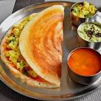

Masala Dosa

Description
- Thin, crispy South Indian crepes made from fermented rice and urad dal batter, filled with a spiced potato stuffing.
- Served hot with coconut chutney and sambar—perfect for breakfast or dinner.
Ingredients
- 1 cup dosa rice
- 1/4 cup urad dal (split black gram)
- 1/2 tsp fenugreek seeds
- Salt to taste
- Oil or ghee for cooking
- For potato filling:
- 2-3 boiled potatoes
- 1 onion, sliced
- 1-2 green chilies, chopped
- 1 tsp mustard seeds
- 1/2 tsp turmeric
- Few curry leaves
- Salt to taste
- Chopped coriander (optional)
Steps
- Soak rice, urad dal, and fenugreek seeds for 4–6 hours. Grind into a smooth batter, add salt, and ferment overnight.
- For filling: Heat oil, crackle mustard seeds, add onions, green chilies, curry leaves, turmeric, and mashed potatoes. Mix well. Add salt and coriander.
- Heat a non-stick or cast iron tawa. Pour a ladle of batter and spread into a thin circle.
- Drizzle oil/ghee around edges. Cook until golden and crisp.
- Place potato filling in center. Fold dosa and serve hot with chutney and sambar.